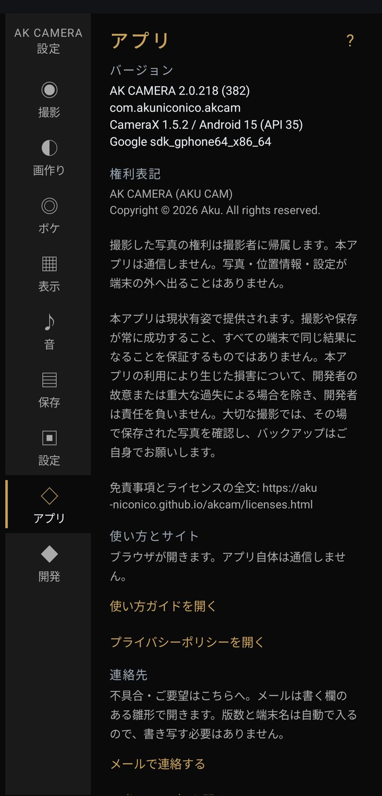

設定：アプリ

- バージョン
- アプリのバージョンと端末の情報。不具合を知らせるときに添えてください。
- 使い方とサイト
- このページとプライバシーポリシーをブラウザで開きます。アプリ自体は通信しません。
- 連絡先
- 「メールで連絡する」を押すと、書く欄だけ空いたメールの下書きが開きます。バージョンと端末名は自動で入ります。X（旧Twitter）も開けます。
- 開発を支援する
- Ko-fi のページを開きます。支援してもしなくても、使える機能は同じです。
- 権利表記 / オープンソースソフトウェア
- 権利表記と、使っているライブラリの一覧です。全文は ライセンスと免責事項 にあります。